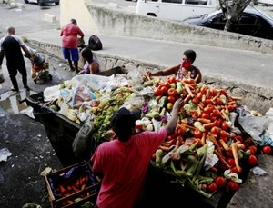

O Brasil é gigante na produção de alimentos, mas também desperdiça toneladas todos os dias. Cada pessoa joga fora, em média, 60 kg de comida por ano, enquanto milhões de famílias sentem fome diariamente. Segundo a ONU, o país ocupa o 10º lugar mundial nesse triste ranking. É hora de mudar essa realidade!
Fome e desperdício caminham juntos:
21 milhões de brasileiros lutam para ter o que comer.
Mais de 70 milhões convivem com insegurança alimentar frequentemente.
10 milhões sofrem desnutrição de modo grave.

Por que muitos alimentos são jogados fora?
O desperdício acontece desde a colheita até a mesa do consumidor. No campo, frutas e legumes ideais para consumo são descartados apenas por estarem fora do padrão visual. Falhas no transporte e armazenamento causam estragos em grandes lotes. Nos mercados, produtos próximos à validade são descartados, mesmo ainda próprios para o uso. E, em casa, compramos mais do que precisamos ou não aproveitamos sobras, aumentando ainda mais as perdas.
Fatores culturais: Os hábitos alimentares predominantes no Brasil muitas vezes levam à valorização de aparência e frescor em detrimento do aproveitamento integral dos alimentos. Produtos fora do padrão visual estabelecido pelo mercado são descartados ainda que estejam próprios para o consumo. Além disso, há pouca disseminação de práticas culturais voltadas à utilização integral dos ingredientes, como por exemplo, nas culinárias Francesa, Japonesa e Italiana, onde valorizam cascas, talos e sementes em receitas do dia a dia.
Fatores econômicos: Promoções e ofertas de grandes quantidades incentivam compras em excesso, especialmente em supermercados. Muitas famílias acabam levando mais alimento do que realmente utilizam, o que aumenta o risco de vencimento e desperdício em casa. Em estabelecimentos comerciais, a busca por maior rotatividade e margens de lucro leva ao descarte frequente de produtos ainda próprios para o consumo, mas com prazo de validade próximo ao término.
Fatores estruturais: A infraestrutura de transporte e armazenamento no Brasil ainda apresenta desafios: estradas ruins, caminhões inadequados para conservar produtos perecíveis e depósitos sem controle de temperatura/conservação fazem com que grandes volumes sejam perdidos antes mesmo de chegarem aos pontos de venda. Mercados e armazéns com estrutura deficitária também contribuem para o desperdício.
Fatores comportamentais: A falta de planejamento no momento das compras e durante o preparo das refeições gera desperdício doméstico significativo. Muitas pessoas não organizam suas listas de compras de acordo com o consumo real, esquecem alimentos no estoque doméstico ou desconhecem técnicas e receitas para aproveitar integralmente sobras e partes não convencionais dos alimentos. Essa falta de informação contribui diretamente para o aumento das perdas ao longo da cadeia alimentar.
Como a tecnologia pode ajudar a resolver esse desafio?
A redução do desperdício de alimentos no Brasil é um desafio que exige também inovação e tecnologia para ser enfrentado de forma eficaz. Diversas soluções inteligentes já estão sendo implementadas desde o campo até o consumidor final. Essas iniciativas contribuem para preservar o frescor dos produtos, garantir a distribuição adequada dos alimentos e promover mais segurança e transparência na gestão de estoques e processos:
Sistemas de gestão de estoque baseados em tecnologia, como RFID (Identificação por Radiofrequência) e sensores, podem ajudar a monitorar a quantidade e a condição dos alimentos em tempo real, permitindo uma gestão mais eficiente e reduzindo as perdas.
Aplicativos facilitam doações: Plataformas como Comida Invisível e Food to Save possibilitam que alimentos próximos do vencimento sejam disponibilizados gratuitamente ou com desconto para instituições e pessoas necessitadas.
Blockchain proporciona rastreabilidade total – Blockchain é uma tecnologia que registra informações em blocos conectados, garantindo segurança, transparência e que nada pode ser apagado ou alterado. É possível saber a origem, o transporte e o manuseio de cada lote, garantindo segurança e transparência.
Drones detectam problemas nas plantações e melhoram o uso da água, fertilizantes e defensivos, diminuindo perdas no campo.
Embalagens especiais (como as a vácuo) mantêm o frescor por mais tempo e reduzem descartes por deterioração precoce.
Que atitudes podem mudar esse cenário?
Educação: Campanhas despertam o consumidor para a importância do aproveitamento total dos alimentos e combate às compras impulsivas.
Gestão eficiente: Adoção de práticas logísticas seguras no transporte, armazenamento e exposição em prateleiras.
Padrão flexível: Aceitar produtos "feios” que são saborosos e nutritivos, combatendo o preconceito contra aparência “imperfeita”.
Consumo consciente: Planejar as compras semanais, reaproveitar sobras e armazenar corretamente.
Políticas de doação: Incentivo à legislação facilitando a doação de excedentes de supermercados e feiras.
Reciclagem e compostagem: Transformar restos de alimentos em adubo para novas plantações.
O desperdício de alimentos afeta não apenas a sociedade, mas também o meio ambiente, a economia e a saúde pública. Cada ação individual e coletiva pode contribuir para mudar essa realidade. Faça parte dessa transformação: repense seus hábitos, aproveite integralmente os alimentos e compartilhe boas ideias!